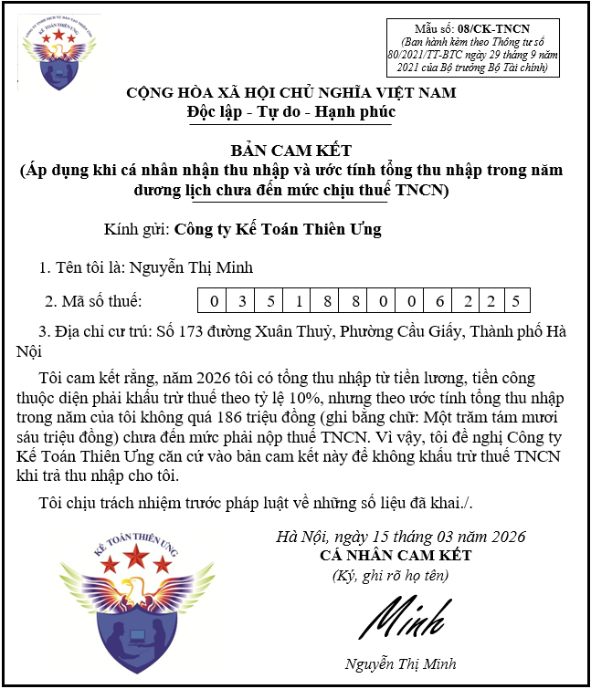

Các bạn đều biết rằng: Khi làm cam kết thu nhập theo mẫu 08/CK-TNCN thì cá nhân (Người lao động có thu nhập) sẽ không bị tổ chức chi trả thu nhập doanh (doanh nghiệp) khấu trừ tiền thuế thu nhập cá nhân
Nhưng không phải cá nhân (Người lao động có thu nhập) nào cũng được làm kết thu nhập để không bị khấu trừ thuế
Muốn được làm cam kết thu nhập thì cá nhân (Người lao động có thu nhập) phải đáp ứng được những điều kiện theo quy định của Luật thuế thu nhập cá nhân
Hiện nay việc làm cam kết thu nhập đang được quy định và hướng dẫn tại điểm i, khoản 1, điều 25 của Thông tư 111/2013/TT-BTC quy định về thuế TNCN như sau:
Hiện nay việc làm cam kết thu nhập đang được quy định và hướng dẫn tại điểm i, khoản 1, điều 25 của Thông tư 111/2013/TT-BTC quy định về thuế TNCN như sau:
Điều 25. Khấu trừ thuế và chứng từ khấu trừ thuế
1. Khấu trừ thuế
i) Khấu trừ thuế đối với một số trường hợp khác
Các tổ chức, cá nhân trả tiền công, tiền thù lao, tiền chi khác cho cá nhân cư trú không ký hợp đồng lao động (theo hướng dẫn tại điểm c, d, khoản 2, Điều 2 Thông tư này) hoặc ký hợp đồng lao động dưới ba (03) tháng có tổng mức trả thu nhập từ hai triệu (2.000.000) đồng/lần trở lên thì phải khấu trừ thuế theo mức 10% trên thu nhập trước khi trả cho cá nhân.
Trường hợp cá nhân chỉ có duy nhất thu nhập thuộc đối tượng phải khấu trừ thuế theo tỷ lệ nêu trên nhưng ước tính tổng mức thu nhập chịu thuế của cá nhân sau khi trừ gia cảnh chưa đến mức phải nộp thuế thì cá nhân có thu nhập làm cam kết (theo mẫu ban hành kèm theo văn bản hướng dẫn về quản lý thuế) gửi tổ chức trả thu nhập để tổ chức trả thu nhập làm căn cứ tạm thời chưa khấu trừ thuế thu nhập cá nhân.
Căn cứ vào cam kết của người nhận thu nhập, tổ chức trả thu nhập không khấu trừ thuế. Kết thúc năm tính thuế, tổ chức trả thu nhập vẫn phải tổng hợp danh sách và thu nhập của những cá nhân chưa đến mức khấu trừ thuế (vào mẫu ban hành kèm theo văn bản hướng dẫn về quản lý thuế) và nộp cho cơ quan thuế. Cá nhân làm cam kết phải chịu trách nhiệm về bản cam kết của mình, trường hợp phát hiện có sự gian lận sẽ bị xử lý theo quy định của Luật quản lý thuế.
Cá nhân làm cam kết theo hướng dẫn tại điểm này phải đăng ký thuế và có mã số thuế tại thời điểm cam kết.
Chiếu theo quy định tại điểm i, khoản 1, điều 25 của Thông tư 111/2013/TT-BTC nêu trên và nội dung trên cam kết thu nhập mẫu 08/CK-TNCN được ban hành kèm theo thông tư 80/2021/TT-BTC thì các điều kiện để người lao động được làm cam kết thu nhập gồm có:
Điều kiện số 1: Về tình trạng cư trú
Việc làm cam kết thu nhập chỉ dành cho cá nhân cư trú
=> Cá nhân không cứ trú: không được làm cam kết thu nhập
=> Cá nhân không cứ trú: không được làm cam kết thu nhập
Kế Toán Diệu Tâm mời các bạn tham khảo thêm:
Cách xác định cá nhân cứ trú và không cư trú
Cách xác định cá nhân cứ trú và không cư trú
Điều kiện số 2: Về loại hợp đồng
Việc làm cam kết thu nhập chỉ dành cho cư trú ký hợp đồng lao động dưới 3 tháng hoặc không ký hợp đồng lao động (mà ký các loại hợp đồng như: hợp đồng thử việc, hợp đồng khoán việc, hợp đồng dịch vụ, hợp đồng môi giới, thực tập, đào tạo...)
=> Người lao động ký hợp đồng lao động có thời hạn từ 3 tháng trở lên (bao gồm cả hợp đồng lao động vô thời hạn): không được làm cam kết thu nhập
=> Người lao động ký hợp đồng lao động có thời hạn từ 3 tháng trở lên (bao gồm cả hợp đồng lao động vô thời hạn): không được làm cam kết thu nhập
Điều kiện số 3: Về đăng ký mã số thuế TNCN
Cá nhân làm cam kết phải đăng ký thuế và đã có mã số thuế tại thời điểm cam kết.
Lưu ý: Từ ngày 01/7/2025, số định danh cá nhân sẽ được sử dụng thay cho mã số thuế cá nhân theo quy định tại Khoản 7 Điều 35 Luật Quản lý thuế số 38/2019/QH14 và Điều 7 Thông tư 86/2024/TT-BTC.
Theo Công văn 2065/CT-NVT ngày 26 tháng 6 năm 2025 triển khai sử dụng số định danh cá nhân thay cho mã số thuế và sử dụng tài khoản định danh điện tử của tổ chức trong giao dịch thuế điện tử thì:
+ Trường hợp người nộp thuế chưa được cấp mã số thuế trước ngày 01/7/2025: Cá nhân thực hiện thủ tục đăng ký thuế trước khi có phát sinh nghĩa vụ với ngân sách nhà nước theo quy định tại Điều 22 Thông tư số 86/2024/TT-BTC
+ Trường hợp người nộp thuế đã được cấp mã số thuế trước ngày 01/7/2025: Trường hợp thông tin đăng ký thuế đã khớp đúng với thông tin của cá nhân được lưu trữ trong Cơ sở dữ liệu quốc gia về dân cư thì Mã Số thuế đã được cấp trước ngày 01/7/2025 được cơ quan thuế chuyển đổi sang số định danh cá nhân, không phát sinh thủ tục hành chính đối với người nộp thuế khi chuyển đổi.
(Trên cam kết thu nhập có dòng thông tin về mã số thuế TNCN của người lao động có thu nhập => Khi làm cam kết thu nhập phải kê khai thông tin về MST TNCN lên cam kết để cơ quan thuế quản lý)
=> Tại thời điểm làm cam kết (ngày làm cam kết), người lao động chưa có mã số thuế TNCN hoặc là chưa đăng ký thuế thì sẽ: không được làm cam kết thu nhập
Kế Toán Diệu Tâm mời các bạn tham khảo thêm:
Cách đăng ký mã số thuế TNCN
Cách đăng ký mã số thuế TNCN
Điều kiện số 4: Về ước tính tổng thu nhập trong năm tính thuế
+ Nếu cá nhân (người lao động có thu nhập) mà ước tính tổng thu nhập trong năm dương lịch chưa đến mức chịu thuế TNCN thì: đủ điều kiện về ước tính thu nhập để làm cam kết thu nhập
+ Nếu cá nhân (người lao động có thu nhập) mà ước tính tổng thu nhập trong năm dương lịch đã đến mức chịu thuế TNCN thì: không được làm cam kết thu nhập
+ Nếu cá nhân (người lao động có thu nhập) mà ước tính tổng thu nhập trong năm dương lịch đã đến mức chịu thuế TNCN thì: không được làm cam kết thu nhập
Cách ước tính thu nhập trong năm tính thuế như sau:
Bước 2: Xác định tổng số tiền được giảm trừ gia cảnh của cả năm
Bước 3: Tính toán rồi xác định kết quả:
+ Nếu "Thu nhập chịu thuế của cả năm" đã ước tính được tại bước 1 TRỪ ĐI "Tổng số tiền được giảm trừ gia cảnh của cả năm" cho ra kết quả bằng 0 hoặc nhỏ hơn 0 => Thì đây là trường hợp thu nhập trong năm tính thuế không hoặc chưa đến mức phải nộp thuế => Đáp ứng được điều kiện về ước tính thu nhập để làm cam kết
+ Nếu "Thu nhập chịu thuế của cả năm" đã ước tính được tại bước 1 TRỪ ĐI "Tổng số tiền được giảm trừ gia cảnh của cả năm" cho ra kết quả lớn hơn 0 => Thì đây là trường hợp thu nhập trong năm tính thuế đã đến mức phải nộp thuế => Không đáp ứng được điều kiện về ước tính thu nhập để làm cam kết => Không được làm cam kết
Bước 1: Ước tính tổng thu nhập chịu thuế trong năm dương lịch
Tổng mức thu nhập chịu thuế: Là tổng thu nhập chịu thuế từ tiền lương tiền công của cả năm tính thuế (năm muốn làm cam kết) (Đây chỉ là ước tính thôi, căn cứ vào các tháng đã nhận được tiền lương rồi (nếu có), bạn ước lượng nốt xem các tháng còn lại trong năm mình sẽ kiếm được bao nhiêu tiền, có mức thu nhập là bao nhiêu)
(Tổng TNCT của cả năm = Tổng thu nhập của cả năm - Tổng các khoản thu nhập được miễn thuế của cả năm)
Bước 2: Xác định tổng số tiền được giảm trừ gia cảnh của cả năm
Giảm trừ gia cảnh của cả năm bao gồm có giảm trừ bản thân và người phụ thuộc
(Mức giảm trừ từ năm 2026: bản thân là 15.500.000/tháng (cả năm là 186 triệu), người phụ thuộc 6.200.000/người/tháng (cả năm = số tháng giảm trừ trong năm X mức giảm trừ))
Bước 3: Tính toán rồi xác định kết quả:
+ Nếu "Thu nhập chịu thuế của cả năm" đã ước tính được tại bước 1 TRỪ ĐI "Tổng số tiền được giảm trừ gia cảnh của cả năm" cho ra kết quả bằng 0 hoặc nhỏ hơn 0 => Thì đây là trường hợp thu nhập trong năm tính thuế không hoặc chưa đến mức phải nộp thuế => Đáp ứng được điều kiện về ước tính thu nhập để làm cam kết
+ Nếu "Thu nhập chịu thuế của cả năm" đã ước tính được tại bước 1 TRỪ ĐI "Tổng số tiền được giảm trừ gia cảnh của cả năm" cho ra kết quả lớn hơn 0 => Thì đây là trường hợp thu nhập trong năm tính thuế đã đến mức phải nộp thuế => Không đáp ứng được điều kiện về ước tính thu nhập để làm cam kết => Không được làm cam kết
Ví dụ: Trong năm tính thuế 2026, Anh Thành có thông tin như sau:
+ Anh Thành làm nghề tự do: thu nhập trung bình khoảng 10 triệu/tháng
+ Anh Thành không có người phụ thuộc
+ Anh Thành không có người phụ thuộc
+ Tháng 8/2026, anh Thành có phát sinh thu nhập tại công ty Kế Toán Diệu Tâm theo hợp đồng khoán việc là 3.000.000đ
Anh Thành ước tính thu nhập trong năm tính thuế 2026 như sau:
Bước 2: Xác định tổng số tiền được giảm trừ gia cảnh của cả năm
Bước 3: Tính toán rồi xác định kết quả:
Tổng thu nhập chịu thuế là 120 triệu - Tổng số tiền được giảm trừ gia cảnh là 186 triệu = - 66 triệu < 0 => Đây là trường hợp thu nhập trong năm tính thuế chưa đến mức phải nộp thuế => Anh Thành đáp ứng được điều kiện về ước tính thu nhập để làm cam kết
Bước 1: Ước tính tổng thu nhập chịu thuế trong năm dương lịch
Với mức thu nhập trung bình khoảng 10 triệu/tháng => Cả năm sẽ khoảng 120 triệu
Bước 2: Xác định tổng số tiền được giảm trừ gia cảnh của cả năm
Vì không có người phụ thuộc, chỉ có giảm trừ bản thân thôi
Nên mức giảm trừ gia cảnh cả năm = 15.500.000 x 12 = 186 triệu
Bước 3: Tính toán rồi xác định kết quả:
Tổng thu nhập chịu thuế là 120 triệu - Tổng số tiền được giảm trừ gia cảnh là 186 triệu = - 66 triệu < 0 => Đây là trường hợp thu nhập trong năm tính thuế chưa đến mức phải nộp thuế => Anh Thành đáp ứng được điều kiện về ước tính thu nhập để làm cam kết
Điều kiện số 5: Về nơi phát sinh thu nhập trong năm tính thuế
Kế Toán Diệu Tâm đặc biệt lưu ý với các bạn như sau:
Đủ điều kiện về nơi phát sinh thu nhập đối với người lao động: Trong năm tính thuế, tại thời điểm cá nhân (người lao động có thu nhập muốn làm cam kết) chỉ có thu nhập bị tính thuế theo tỷ lệ 10% (Tức là chỉ có thu nhập từ hợp đồng lao động dưới 3 tháng hoặc có thu nhập từ các loại hợp đồng không phải là hợp đồng lao động như hợp đồng thử việc, hợp đồng khoán việc, hợp đồng dịch vụ, hợp đồng môi giới, thực tập, đào tạo...), kể cả trường có thu nhập như vậy tại nới khác nữa (chỉ cần ở tất cả các nơi đó đều là ký hợp đồng lao động dưới 3 tháng hoặc ký các loại hợp đồng không phải là hợp đồng lao động như hợp đồng thử việc, hợp đồng khoán việc, hợp đồng dịch vụ, hợp đồng môi giới, thực tập, đào tạo... là được)
Trường hợp trong năm tính thuế, tại thời điểm làm cam kết mà cá nhân (người lao động có thu nhập muốn làm cam kết) đã có thêm hợp đồng lao động từ 3 tháng trở lên (Tính thuế TNCN theo biểu lũy tiến) => Không đáp ứng được điều kiện về nơi phát sinh thu nhập để làm cam kết => Không được làm cam kết
Kế Toán Diệu Tâm đặc biệt lưu ý với các bạn như sau:
Người lao động phải đáp ứng đồng thời tất cả các điều kiện nêu trên thì mới được làm cam kết thu nhập. Nếu người lao động không đáp ứng được bất kỳ 1 điều kiện nào trong các điều kiện trên thì không được làm cam kết thu nhập
Mẫu cam kết thu nhập mẫu 08/CK-TNCN theo thông tư 80/2021/TT-BTC:

Kế Toán Diệu Tâm mời các bạn tham khảo thêm: